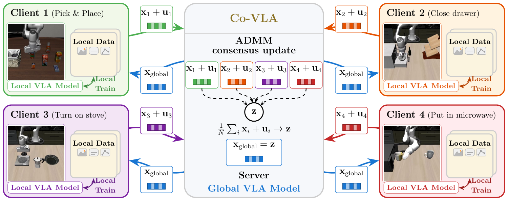

Learn on each client
Train on local observations, instructions, and target actions. A quadratic penalty couples the local parameters to the global model.
Robot data stays local
1 Intelligent Perception in Technical Systems, University of Augsburg, Germany
2 Max Planck Institute for Intelligent Systems, Germany

Vision-language-action models map camera observations and language instructions to robot actions. Their performance improves with more data, but robot demonstrations are spread across tasks, labs, and platforms. Combining all of that data in one place can be costly or impractical.
Co-VLA applies consensus ADMM to federated training of vision-language-action models. Each client learns from its own demonstrations. A shared global model, a penalty on local disagreement, and accumulated correction terms help align the clients despite their different data distributions.
The same algorithm supports full-model training, fixed-rank LoRA adapters, and rank-adaptive SoRA adapters.
Vision-language-action models (VLAs) have emerged as a promising paradigm for general-purpose robot learning, with performance improving as models and datasets scale. Scaling robot data collection, however, remains challenging because data are naturally distributed across robots, tasks, and locations, making centralization costly or impractical. Federated learning offers a way to train on decentralized robot data, but applying it to VLAs requires accounting for heterogeneous robot client data distributions. We present Co-VLA, which applies consensus optimization using the Alternating Direction Method of Multipliers (ADMM) to federated VLA training. We show that the same algorithm supports both full-model training and parameter-efficient fine-tuning with both fixed-rank and rank-adaptive adapters. The name Co-VLA reflects both consensus and collaboration: clients with different local robot datasets collaboratively train a shared model without sharing their data. Our experiments demonstrate that Co-VLA achieves performance comparable to centralized training in both full-model training and parameter-efficient fine-tuning settings.
One optimization principle, from full-model training to parameter efficient fine-tuning.
Train on local observations, instructions, and target actions. A quadratic penalty couples the local parameters to the global model.
Each client maintains a dual variable: a correction that accumulates the difference between its updates and the shared model.
The server averages the corrected updates, then sends the new global parameters back to every client.
Local parameters xi, local action loss fi, and shared global parameters z.
Co-VLA solves this objective using the Alternating Direction Method of Multipliers (ADMM), with a fixed number of local gradient steps per round.
Apply consensus to the trainable policy parameters. The local model uses its usual action-supervision loss.
Align the low-rank factors themselves. This reduces the mismatch between averaging factor products and multiplying averaged factors.
Add shared gates to the rank components. Server-side soft thresholding drives unused gates to zero, enabling adapter pruning.
We report success rates (0–1) on LIBERO over 500 evaluation trials per task suite. Federated training uses ten clients per suite, with one task per client.
| Method | Spatial | Object | Goal | Long |
|---|---|---|---|---|
| Co-VLA | 0.80 | 0.91 | 0.92 | 0.71 |
| FedAvg | 0.76 | 0.89 | 0.91 | 0.63 |
| DiLoCo | 0.77 | 0.93 | 0.90 | 0.76 |
| Centralized training | 0.81 | 0.95 | 0.94 | 0.70 |
Federated training: 1,500 communication rounds, 100 local steps per round.
SmolVLA
Success rate · Higher is better| Method | Spatial | Object | Goal | Long |
|---|---|---|---|---|
| Co-VLA LoRA | 0.75 | 0.81 | 0.87 | 0.51 |
| Co-VLA SoRA | 0.69 (60%) | 0.79 (59%) | 0.88 (55%) | 0.53 (58%) |
| FedAvg LoRA | 0.61 | 0.67 | 0.79 | 0.52 |
| DiLoCo LoRA | 0.47 | 0.61 | 0.77 | 0.51 |
| FLoRA | 0.66 | 0.79 | 0.81 | 0.50 |
| FLoRA (7,500 rounds) | 0.71 | 0.80 | 0.84 | 0.58 |
| FlexLoRA | 0.66 | 0.77 | 0.81 | 0.54 |
| Centralized training | 0.76 | 0.80 | 0.84 | 0.57 |
Federated training: 2,500 communication rounds unless marked, 100 local steps per round.
Percentages in parentheses indicate the fraction of adapter parameters retained after SoRA pruning.
X-VLA
Success rate · Higher is better| Method | Spatial | Object | Goal | Long |
|---|---|---|---|---|
| Co-VLA LoRA | 0.88 | 0.97 | 0.93 | 0.78 |
| Co-VLA SoRA | 0.83 (86%) | 0.91 (83%) | 0.85 (86%) | 0.70 (89%) |
| FlexLoRA | 0.64 | 0.62 | 0.55 | 0.54 |
| FlexLoRA (2,500 rounds) | 0.74 | 0.70 | 0.64 | 0.54 |
| Centralized training | 0.87 | 0.98 | 0.93 | 0.74 |
Federated training: 900 communication rounds unless marked, 100 local steps per round.
Percentages in parentheses indicate the fraction of adapter parameters retained after SoRA pruning.
We measure SmolVLA’s ℓ1 action prediction error against recorded actions on four real-world datasets, using 100 held-out test episodes per dataset. Federated training uses four clients, with one dataset per client.
Cross-embodiment datasets
| Dataset | Robot type | Action dimensions | Training share |
|---|---|---|---|
| Berkeley Bridge | WidowX | 7 | 23.46% |
| FMB | Franka | 7 | 13.94% |
| Jaco Play | Jaco 2 | 4 | 15.66% |
| Fractal | Google Robot | 7 | 46.94% |
Action prediction error
Relative change from centralized training (%) · Lower is better| Method | Average | Berkeley Bridge | FMB | Jaco Play | Fractal |
|---|---|---|---|---|---|
| Co-VLA | +1.3 | −1.2 | −1.2 | +1.9 | +5.5 |
| FedAvg | +4.3 | +0.0 | +4.9 | +7.2 | +4.9 |
| DiLoCo | +2.0 | −2.8 | +4.7 | +1.7 | +4.2 |
Negative values indicate lower error than centralized training.
We evaluate SmolVLA on four tasks using an SO-101 robot arm, with 50 training demonstrations per task. Federated training uses four clients, with one task per client.
Put the red cube on top of the blue cube.
Task success rates (0–1) · 40 evaluation trials per task
Success rate · Higher is better| Method | Average | Stack | Pick & place | Sort | Fold |
|---|---|---|---|---|---|
| Co-VLA Ours | 0.994 | 0.975 | 1.0 | 1.0 | 1.0 |
| FedAvg | 0.888 | 0.625 | 1.0 | 0.925 | 1.0 |
| DiLoCo | 0.894 | 0.675 | 0.975 | 0.925 | 1.0 |
| Centralized training | 0.969 | 0.925 | 1.0 | 0.95 | 1.0 |
Federated training: 1,000 communication rounds, 100 local steps per round.
@misc{li2026covlaconsensusbasedfederatedtraining,
title = {Co-VLA: Consensus-based Federated Training for Vision-Language-Action Models},
author = {Haolong Li and Guner Dilsad Er and Michael Muehlebach and Joerg Stueckler},
year = {2026},
eprint = {2609.19923},
archivePrefix = {arXiv},
primaryClass = {cs.RO},
url = {https://arxiv.org/abs/2609.19923},
}